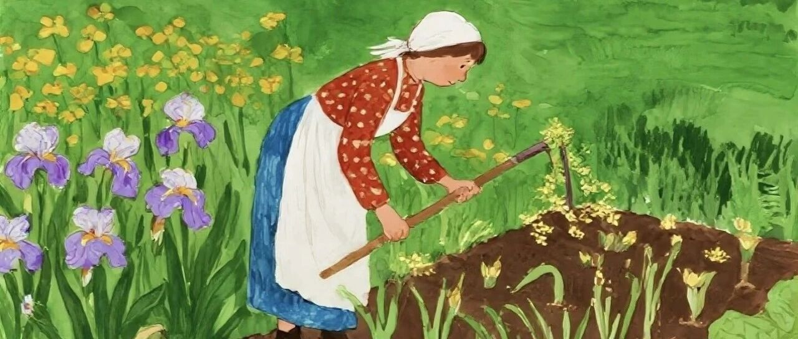

看完我的一天，你还想提前退休吗？
点击关注 秋秋在分享
一起实现财务自由退休
大家好，我是秋秋呀。
今天这篇文章有点长，完全按照写书的方式写了，方便后面出版。
有人会好奇，提前退休后不工作一天都做什么？不无聊吗？普通人提前退休会与社会脱节吗？
今天我就好好跟大家聊聊，FIRE这四年，我是怎么过来的。
起床
刚财务自由那阵，我连闹钟都不定，完全自然醒。有时候懒散的醒过来，都九点多了，也不急着起身，赖会床再去吃早饭。
不过没多久，作息就慢慢规律起来了，即使不工作也会八点多醒。
有人会纳闷，你都退休了，还把自己的作息卡这么严？甚至你还出来写东西做内容！
是日常消遣时间太多，也就不追求哪一种玩法了，追求平衡、早睡自然就早起了。
一般早上醒来，我会先倒一杯温水，慢慢喝下去润润喉咙，然后做一套八段锦。我之前说过自己肝郁气结体质，中医说这个操有助于我疏通自己，一套20分钟每个动作都不快，但是做到位全身的筋骨都会感觉舒展，一天的精神也就足了。

以前上班的时候，我总感觉早上时间很赶，现在喝完水做完八段锦，这一天才算真正开始。
当然我也会顺手打窗户晒晒太阳呼吸一下新鲜空气，晒太阳能让身体里长出血清素，这是一种能让人开心的荷尔蒙，它稳住神经，让人不急躁、不焦虑。
上班的时候朝九晚八，根本没时间晒太阳，血清素不够，人就容易心情不好，还可能睡不好觉，所以现在提前退休了，早上阳光好的时候我一定要晒一会太阳再下楼吃饭。
早餐
我的早餐没有山珍海味，甚至连炒菜荤腥都没有。可能是太懒了加上早上也没什么胃口，我们一家人早餐大多都是吃白水煮的东西，不用费太多心思就能准备好，刷洗也很简单。
水煮鸡蛋、水煮玉米、水煮红薯、水煮白粥、水煮小米粥、水煮面条、水煮青菜......都是家常吃食，便宜易得，却也能养肠胃。
这两年我们在外面旅居，酒店早餐虽然丰富，但是爱吃的还是这几样，尤其有了小孩子你会发现早饭喝点米油、吃点鸡蛋青菜，比吃复杂的饭菜会更少生病。
说到煮红薯，我还有不少心得，不同品种的红薯，煮起来口感差别很大！
像我我平时最爱两种，一种是板栗红薯，一种是冰激凌红薯，这两种煮起来都特别好吃。
板栗红薯很面，带着淡淡的板栗香，不怎么甜，适合喜欢吃粉糯口感的人。它的表皮大多是深褐色，个头中等，掂起来很沉，果肉偏黄，煮出来口感粉糯扎实。
冰激凌红薯就不一样了，表皮大多是淡红色，果肉有点像红心萝卜那种，最里头颜色深外面是淡紫色，水分多，煮出来软糯细腻，甜度更高，入口绵密，有点像吃冰激凌的口感，所以叫冰激凌红薯。
我偶尔想吃甜一点的，就会挑冰激凌红薯。
煮红薯的时候，不要煮太久，一般是水开后煮二十分钟左右，用筷子能轻松扎透，就说明熟了，这样煮出来的红薯，不烂不硬，能最大程度保留本身的口感和香味。如果把皮都煮裂了，反而不好吃了。
水煮鸡蛋我也会煮得嫩一点，最好煮完就立刻用凉水冲洗几遍，这样剥壳方便，吃起来也爽口。
煮玉米的话，我们会选择那种甜玉米，相比淡黄色小颗粒的糯玉米，大颗粒颜色深黄的甜玉米会更多汁，水开后煮十五分钟，特别解腻。
一般早上一个鸡蛋、水煮个菜心或者西兰花，搭配玉米红薯就能吃的很好了。有时候也会喝点牛奶、白粥、燕麦。
当然不想吃水煮的，我也会吃几片面包，就是那种普通的切片面包，抹点果酱，简单又顶饱。小朋友早上会喝奶粉，搭配一个自制三明治，一片面包一个煎鸡蛋几片黄瓜西红柿，方便快捷，还吃的很开心。
吃完早餐，我会顺手把厨房收拾干净，碗碟洗好，台面擦干净，物品整洁心思也会整洁。收拾上面我也有自己的小心得，比如擦桌子。
可以找个宜家的浇花小喷壶，里面灌上洗洁精水，先用这个把桌子喷一下去除油污，再用鱼鳞抹布擦干净，桌子非常透亮。拖地也是，先喷一遍用刮板扫干净，再正常拖地，一点毛发污渍都没有。

上午的休闲时光
吃完早饭，就是我上午的休闲时光了，以前我大多数用来读书写东西、学点喜欢的，这也是我退休后最享受的时光之一。有了宝宝我和老公轮流带，上午有时间我还是会做这些事。
我会先找一个无人关注我的地方，比如书桌前、车上、小区的凉亭、酒店的休息室，拿出手机安安静静地看一会儿书，这种独处时光会让我觉得非常惬意。
我读的书也没有什么限制，有时候是短篇故事，《瓦尔登湖》《《悉达多》《局外人》《一间自己的房间》常读常新。三毛的《撒哈拉的故事》、李娟的《遥远的向日葵地》我也很喜欢。
有时候也看一些哲学书，叔本华《人生的智慧》我最喜欢，当然我喜欢的作家梭罗、毛姆、加缪、黑塞、伍尔夫很多都颇具有哲学智慧。有时候我也看一些历史书籍，最喜欢《万历十五年》。当然理财书也会翻翻，偶尔也会读一些诗词和杂志，总之也不用刻意去记住什么，只是单纯地沉浸在文字里，享受这份不被打扰的自在就行了。
除了读书，我还喜欢写东西，我觉得写作已经融入我的骨子里了，就是我思考的一部分。我更多的把他当作一个疏通的枢纽。就像一潭死水里面那个开关，只有书写我才能让自己的生命流动。
我学的东西就很杂了，感兴趣摄影、绘画、普拉提、化妆都报班去学过。现在我对种菜养花感兴趣，也会在网上看相关的综艺和教程，就跟着兴趣只享受过程就好了。
有时候读累了、写累了，我就看看窗外的风景或者出去散散步。上午的时间过得很慢很惬意，没有什么必须要做的事，也没有什么催促的声音，想做什么就做什么，不想做就发呆也没事。
说来惭愧其实我也有睡一上午的时候，熬夜玩游戏追剧第二天睡到太阳晒屁股也没什么，这都是我退休后真实的生活嘛。
午睡
上午的时光过去，我会小憩一会儿，这是我从小学就有的习惯。有了宝宝之后我们经常从12点多睡到下午3点。
我们的午饭是睡醒觉才吃，如果吃完饭再睡，一方面是早午饭时间间隔太短，一方面是吃完饭再睡醒来就可能得五点了，毕竟我们的午休是两小时起步的。
我一般会去床上睡，刚工作的时候因为只能趴着桌子上午休让我一度觉得无法适应工作，后来找了一份离家10分钟的工作，中午两个小时午休时间我是一定要回家的。
总之，晒着午后柔和的阳光，不知不觉就睡着了，醒来的时候，浑身都很放松，没有一点疲惫感，精神头也更足了。
我知道现在很多人会宣扬8小时睡眠，甚至很多企业家会说自己高精力人群一天只睡4小时就够了。
心理学研究是睡到1.5H（一个睡眠周期）的倍数才是最好的，也就是7.5小时，9小时，10.5小时。而女性身体的设计本来就是要睡够10小时左右才合理，我也就接受自己这份懒惰了，每天睡十几个小时才踏实。
中晚饭
我一天只吃两餐，早餐简单，下午那顿饭就丰盛一点。
一般来说，这顿中晚饭我们会有两菜一汤。一个荤菜一个素菜，荤菜会多吃牛肉、鱼虾这种高蛋白的。
旅居住酒店的时候，我们早饭在酒店吃，中晚饭就会出去吃特色美食，宁波的大黄鱼、泉州的姜母鸭、潮州的卤鹅、顺德的鱼生、三亚的糟粕醋火锅……
不吃大餐的时候我们也会用带的小锅，做点宝宝辅食一起吃。一般就是煮点面条搭配青菜鸡蛋。
现在我们住在大学里面，吃饭都是去学生食堂解决，一般就是一份米饭，一个西红柿炒鸡蛋或者青菜，一个炒牛肉水煮虾卤鸡腿这种肉菜。
我们小院子也种了番茄、黄瓜、韭菜、生菜、薄荷、小葱。有时候会吃个饺子，有时候用薄荷炒鸡蛋。等天热了还可以吃凉拌黄瓜。夏天天气热了，还可以做凉面吃，放一点点黄瓜丝、胡萝卜丝，淋上一点点香油和酱油，简单又开胃。
我其实不会做太多菜，也不太爱研究吃的，反正一碗粥、一个小菜，吃酒店早饭吃大餐吃学生食堂，对我来说区别都不大。
美食对于我更多的是心理愉悦，食材上我并不觉得小众食材的口感就好于那些易得的产品，比如我们在海南吃过很多热带水果，蛇皮果、释加果、鸡蛋果…….然而最常想念的还是草莓、樱桃、蓝莓、西瓜这种几乎哪里都能买到的。
吃完这顿饭，我们一天的饮食就结束了，五点之前结束完饭对我来说能让肠胃好好休息，第二天早饭还能有食欲。当然偶尔我们也会加餐。

傍晚的休闲时光
下午的时光就比较短暂了，毕竟吃完饭都可能四五点了。如果我出去玩的话午觉就不会睡太久，这样能从3点玩到晚上8点再回家。
这时候阳光也很柔和，天气通常格外舒服。
趁着这个时候，我喜欢出去逛，逛公园、逛商场、逛游乐园。我还喜欢骑车，在北京的时候住在二环边，经常在胡同里穿行。
看到路过下班的行人、放学的孩子、悠闲散步的老人，我会觉得岁月静好、让人心里踏实。
每周我都会探索不同的目的地，还去寺庙和道观待过很久，公益活动也参加不少。
当然闲逛我最喜欢去环球影城玩，不用赶时间，慢慢玩验那些经典的项目，感受小时候的乐趣，疯玩到晚上闭园我才回去，年轻时就是很有活力。
现在我大多时候是带宝宝去附近的公园散步，他喜欢骑小车，我就看着他玩，简单又自在。
这段时光一直持续到晚上，通常夜幕降临，我就会回家追剧，我喜欢看各种综艺、纪录片，小时候我妈说我就长电视前面了。娃玩累了回来七八点就睡了，也不耽误我继续享受夜晚时光。
娱乐
总有人会觉得提前退休就是和社会脱轨，整个人都废了。或许有的人是这样吧，不过我是很会安排自己的娱乐活动的。
我的娱乐方式不追求结果，比如玩游戏，我把switch上热门的游戏都玩遍了，每一部大作都能让我感受到工作人员的用心。
《煮糊了餐厅》是我和老公朋友经常一起玩的，《人类一败涂地》让我俩哈哈大笑，《集合了动森》让我感受到静谧，《勇者斗恶龙2》体会到构建的快乐，《塞尔达》《马里奥》等等太多了，还有《逆转裁判》各种乙女游戏…..
玩游戏的时候，我不太沉迷，更多的是带着欣赏的眼光在玩。
除此之外我还喜欢摄影，拍一年四季的花花草草，拍个照流浪需要救助的小动物，拍寺庙等人文主题，摄影就是用另一双眼睛看世界。
我的娱乐方式并不高大上，包括我喜欢看老剧，《老友记》《大明王朝》《恶作剧之吻》《武林外传》，这些剧能让我静下心来，回忆起过去的点点滴滴。
除了老剧，我还在喜欢看豆瓣100部经典电影，每一部电影都能带给我不一样的感悟，有时候看完一部会觉得走遍了别人的认识。
现在我也喜欢养一些花花草草，在院子里有绣球、月季、玛格丽特、小雏菊，也一些很好养活的植物，太阳花、多肉，根本不用费太多心思去照顾，偶尔浇浇水、松松土就好。
看着这些植物慢慢长大，长出新的叶子、开出新的花朵，我心里就会特别开心，也能感受到生命的美好。
我觉得，娱乐不一定非要多么复杂，只要能让自己开心、能让自己静下心来，就是最好的娱乐。
社交
虽然我过着隐居般的退休生活，但绝不是不和人来往。退休后，我的朋友反而增加了不少，大多都是在各种活动中认识的，也没有复杂的利益牵扯，相处起来特别舒服。
比如在寺庙的时候，我认识了一群志同道合的朋友，大家一起礼佛、祈福，聊养生和生活感悟，三观相合，有说不完的话。
在流浪猫救助活动的时候，我认识了很多有爱心的长辈，他们甚至为了救助事业奔波十几年，大家一起照顾流浪猫，给它们喂食、找领养，看着那些小猫慢慢变得健康、可爱，心里既温暖又有成就感。
出去旅行的时候，我也认识了不少朋友，大家来自五湖四海，一起分享旅行中的趣事，还有很多退休的叔叔阿姨，还会跟我们分享人生心得。
虽然相处的时间不长，但那份真诚的情谊，却很珍贵。
除了新朋友，我和老朋友每个月都会视频聊天，虽然在天南海北过不同的人生，但是各自的近况我们都会陪伴给出建议，有时间了就会聚一聚吃个饭，还是那种熟悉的感觉。
另外，我在网上写东西，也会认识很多朋友，你们留言评论，我都能感受到鼓励和欣赏，甚至旅居到了你们的城市，还能一起吃饭。
我不喜欢复杂的社交，也不喜欢应付各种各样的人，所以我的社交倾向于简单。有几个能说心里话、能互相陪伴的人，能偶尔和大家聊一聊就足够了。
就像《做二休五》这本书里倡导的，砍掉多余的社交，把时间和精力留给自己，留给身边重要的人，这样的生活，才更轻松、更自在。
晚上睡觉
一天结束，我也会睡觉了。
我大多数时候不熬夜，十点多就会洗漱，准备睡觉。睡前我会喝杯温水，躺在床上回想一下这一天的生活。
当然偶尔熬夜也没事，我也不苛责自己哈哈。
我不失眠，一般闭上眼睛没多久就能睡着，睡得也很踏实，很少起夜。我从来不用刻意强迫自己入睡，一切都顺其自然。我始终觉得，好好睡觉，才能有好的身体，才能好好享受这退休后的生活。
我的一天就这么结束了，从早起、早餐、上午休闲，到午睡、中晚饭、午后时光，再到娱乐、睡觉，没有什么轰轰烈烈的大事，却每一天都过得自在、舒心。
☕️
其实，退休后的生活，真的没有多么轰轰烈烈，哪怕我们开始旅居，每周都在不同的城市，大致的生活节奏还是这样的。
简单、平淡，却很充实、很幸福。没有上班的忙碌，没有职场的内耗，没有多余的欲望，只有简单的快乐和踏实的幸福。
秋秋的一天，就是这样，这就是我想要的FIRE生活，不知道你对退休生活有什么期待？